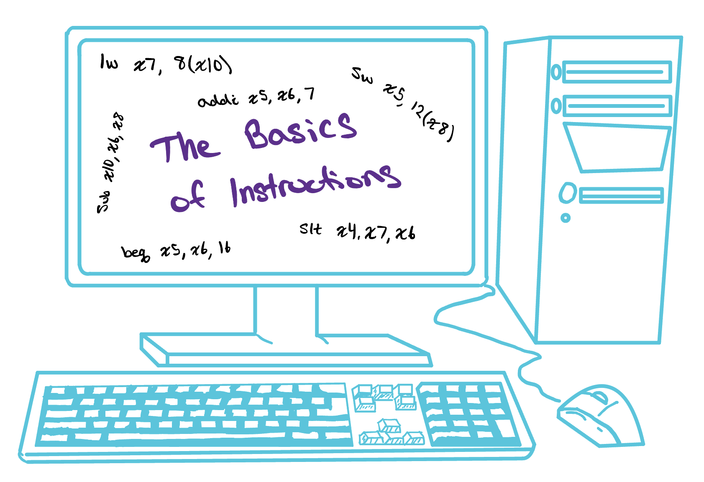
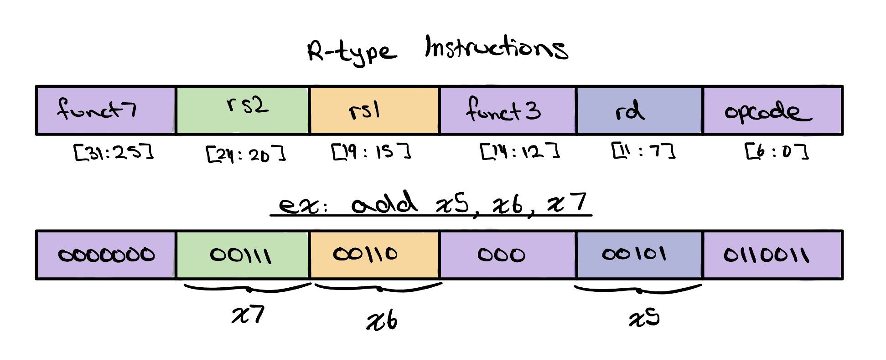
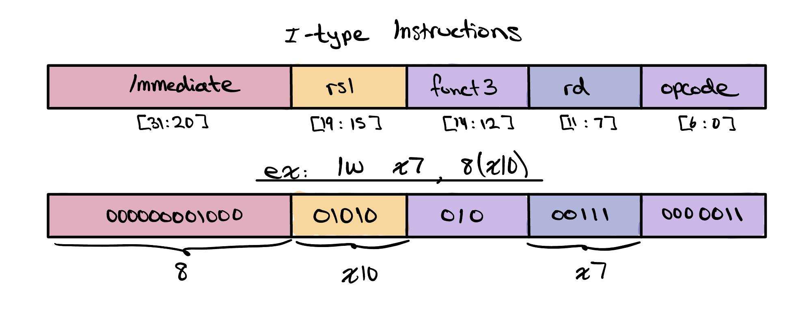
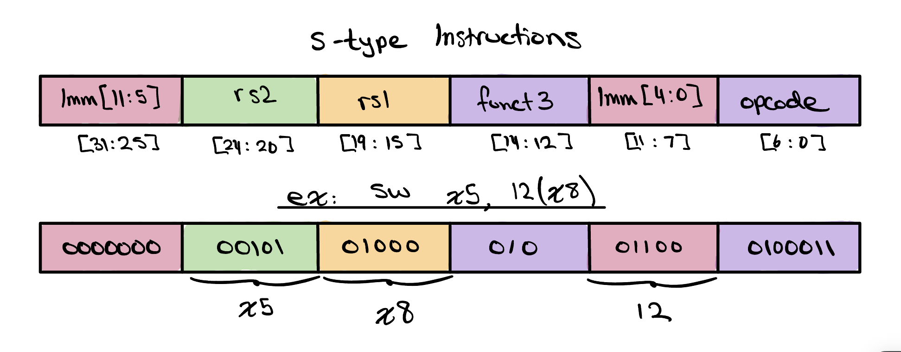
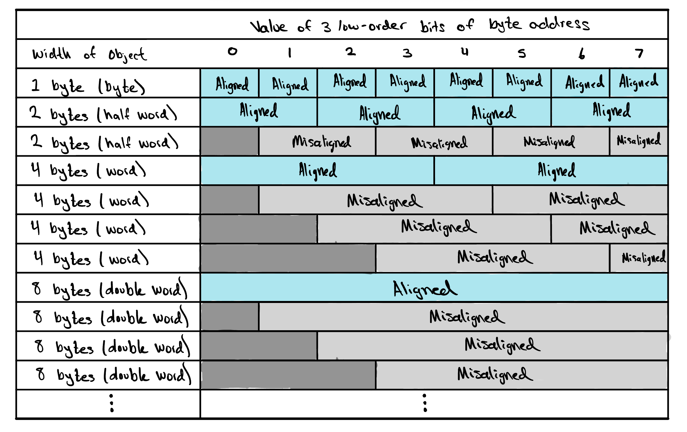
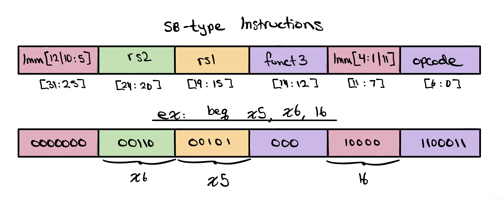
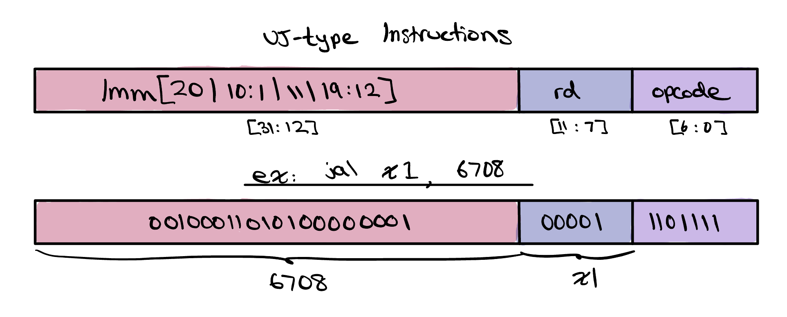
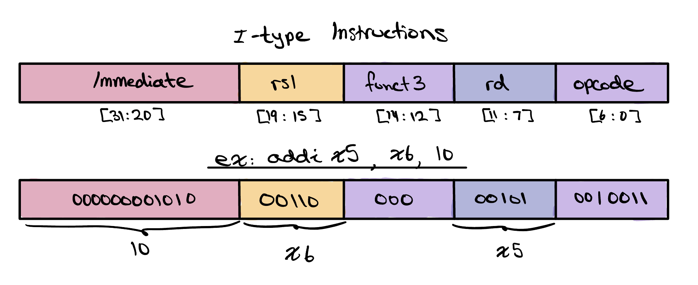
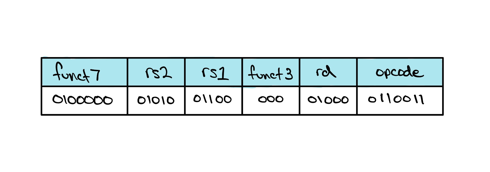

The Basics of Instructions
Every program, in any language, is ultimately handed to the processor as a stream of simple commands called instructions — the language of the computer, and the only vocabulary the hardware understands. Before we can build a CPU that runs them, we need to see how a single instruction is encoded into bits.

Arithmetic and Logical Instructions
In the last project, we constructed our very own Arithmetic Logic Unit, or ALU. Our ALU could perform basic addition, subtraction, AND, OR, NAND, NOR, and a few other operations. While building this, we assumed some other hardware in the computer would be responsible for telling — or instructing — the ALU to perform the operations, and only then would our ALU know to manipulate its control bits to do so. But what do these so-called “instructions” look like?
There are a few different types of instructions in the RISC-V instruction set, but the most basic is the R-type instruction. R-type instructions handle exactly the work our ALU was built for: register-to-register arithmetic and logic. Each one reads two source registers, performs an operation such as add, subtract, AND, OR, or slt on their values, and writes the result back to a destination register.

In RISC-V, every R-type instruction is a single 32-bit number, split
into six fields — reserved portions that each carry one piece
of the instruction. The rs1 and rs2 fields
name the two source registers and rd names the
destination, while the opcode, funct3, and
funct7 fields together select which operation to run,
setting the very control bits our ALU depended on. The diagram shows
exactly this for add x5, x6, x7. Its
opcode is 0110011, the pattern shared by
every R-type instruction, and funct3 and
funct7 — 000 and 0000000 —
together mean add. The source registers x6 and
x7 fill rs1 and rs2, and the
destination x5 fills rd, so the hardware
reads x6 and x7, adds them, and stores the
sum back in x5.
Data Transfer Instructions
A huge part of computing isn't performing arithmetic at all — it's moving information from one place to another. A processor can only operate on values sitting in its registers, yet there are only a few dozen of them, far too few to hold everything a program needs. The rest lives out in memory, so a program is constantly shuttling data back and forth: pulling values in from memory to work on them, then writing the results back out. The instructions that do this shuttling are called data transfer instructions.
The two most common are lw (load word) and
sw (store word). A lw reads a word from
memory into a register, while a sw writes a word from a
register back out to memory. Both find their memory address the same
way, adding an immediate or constant
offset to a base register.
However, because one writes to a register and one doesn't they are
built from different instruction formats.

A lw (load word) copies a word out of memory and into
a register. Because it writes to a destination, it uses the
I-type format: the top 12 bits are a single
immediate offset, followed by the base register
rs1, a funct3,
the destination rd, and the
opcode. In lw x7, 8(x10),
the address is x10 plus an offset of 8, and the word
read from there is placed in x7.

A sw (store word) does the reverse, copying a word from
a register back out to memory. It has no destination register, but
rather two source registers, so it takes the
S‑type format. To make room for that second source
register, we split up our immediate into two
chunks, imm[11:5] and
imm[4:0], and place the smaller chunk where
rd would normally sit. Although this
arrangement looks quite strange, RISC-V has chosen to do this so that
across all instruction types, rs2,
rs1, rd,
funct3, and the
opcode always use the exact same bits,
making it easy for the hardware to pull each field from the same
place no matter which instruction it is decoding. In
sw x5, 12(x8), the value in x5 is stored at the
address x8 plus 12.

One more detail matters whenever we reach out to memory: alignment. Memory is byte-addressable, meaning every byte sits at its own address, one right after another. A word, however, spans four of those bytes, so it can only begin at an address that is a multiple of four — 0, 4, 8, 12, and so on. A word that starts on one of these boundaries is aligned; one that starts anywhere else is misaligned. As the table shows, the same rule applies to objects of every size, and the hardware leans on it: an aligned word can be read or written in a single, clean access, while a misaligned one cannot.
On their own, data transfer and arithmetic instructions already do a great deal — but to make decisions and repeat work, a processor needs one more family: control flow instructions, which we'll explore next.
Control Flow Instructions
So far every instruction we've met runs in a straight line, one after the next. But real programs rarely march straight through — they need to make decisions and repeat work. Without a way to redirect the flow of execution, a processor could only ever run a fixed, predetermined list of instructions. The instructions that let it choose which instruction to run next are called control flow instructions, and because loops and conditionals sit at the heart of nearly every algorithm, they make up a large fraction of everything a CPU actually executes.

RISC-V's conditional branches compare two registers
and jump only if the test passes — beq (branch if equal),
bne (branch if not equal), and blt (branch if less
than), among others. Each reads two source registers and needs a
target to jump to, but never writes a result back to a register. You
might notice that shape looks awfully familiar — two sources, no
destination, plus an immediate — it's the very same shape as the
store's S‑type, so branches take the closely related
SB‑type (or B‑type) format. Its fields, from
the high bits down, are
imm[12|10:5],
rs2,
rs1,
funct3,
imm[4:1|11], and the
opcode. Just as with the S‑type, the
immediate is chopped into scattered chunks
so that rs2,
rs1,
funct3, and the
opcode stay in the exact same bit
positions they occupy in every other format. This time the immediate
is a branch offset — a signed distance, measured from the
branch itself, to the instruction we want to jump to. In
beq x5, x6, 16, if the values in x5 and
x6 are equal, the processor adds 16 to the current address
and continues from there; otherwise it moves on to the very next
instruction.

Branches are perfect for the small, nearby hops of an if or a
loop, but their offset is only wide enough to reach a limited range of
addresses. Calling a function may mean leaping much farther across the
program, so RISC-V provides jal (jump and link). Where a
branch is conditional and only redirects the processor when its test
comes out true, a jal is an unconditional branch: it always
takes the jump, no comparison required. A
jal does two things at once: it jumps to a far-off target, and
it “links” by saving the address of the following
instruction into a destination register, leaving a breadcrumb the
function can use to return. Because it writes a destination and carries
one very large immediate, it uses the UJ‑type
(or J‑type) format. Its fields are the scrambled
imm[20|10:1|11|19:12], the destination
rd, and the
opcode. Nearly the whole instruction is
given over to that single immediate,
which is what lets jal reach so much farther than a branch. In
jal x1, 6708, the processor jumps 6708 bytes ahead and
records the return address in x1, ready to resume once the
function is done.
Look back at both of those immediate fields and you'll notice something
strange. The branch runs imm[12] down to
imm[1] and jal runs
imm[20] down to
imm[1], yet neither one has an
imm[0] anywhere in the instruction. That
missing bit is no accident. Instructions in memory are always at least
two bytes wide, so a branch or jump can only ever land on an
even address, which means its offset is always a multiple of
two and the lowest bit is always zero. Rather than waste a precious
instruction bit storing a value that can never be anything but 0,
RISC-V simply leaves imm[0] out and lets the
hardware assume it, stretching the reach of these instructions since the
same stored bits now span twice as many bytes. The bits that remain look
scrambled for a related reason. RISC-V arranges the jal
immediate, just as it does the branch immediate, so that each bit falls
in nearly the same instruction position it occupies in the other
formats, with the sign bit pinned to the very top so sign extension is
trivial. That way the processor can reuse the same wiring to pull each
immediate bit from the same place no matter which format it is decoding,
trading a layout that looks confusing to us for a decoder that is
simpler and faster to build.
Register Immediate Instructions

An R-type instruction combines the values held in two
registers, but very often one of the operands we want is just a
constant known ahead of time: add one to a counter, mask a value
against a fixed pattern, or compare a number to a threshold. Rather
than burn a whole register loading that constant first, RISC-V lets us
bake it straight into the instruction as a 12-bit
immediate that stands in for the second
source register. These are the register-immediate
instructions, and they run the same arithmetic and logic as their
R-type cousins. Best of all, they don't take much extra effort to learn:
they use the very same I‑type format we already
met with lw, so the immediate,
rs1, funct3,
rd, and opcode
fields all sit exactly where we've seen them before.
The family mirrors the R-type operations with an
i (for “immediate”) tacked on: addi adds a
constant to a register, ori ORs a register against a constant
to force chosen bits high, and slti sets its destination to 1
when the register is less than the constant and 0 otherwise. Each reads
one source register rs1, folds in the
immediate, and writes the result to
rd. For example, addi x5, x6, 10
takes the value in x6, adds the constant 10, and stores the
sum in x5 — no second register required.
Check Yourself
What RISC-V instruction does this represent? Choose from one of the four options below.
